Kontigentmærket består af makrel-i-tomat-mad øverst og stjerneskud til venstre.
Smørrebrød på engelsk
Generelt om smørrebrød
Smørrebrød: Danish open sandwich , oversættes direkte til “buttered bread”, men kaldes også bare smørrebrød
Rugbrød: rye bread (a dense dark brown bread made from sour dough)
Pålæg: i flertal kaldet cold cuts, hvis det er kød kaldes det cold meat
Franskbrød: white bread
Mad (som i “jeg skal have en ostemad”): findes ikke en direkte oversættelse. Det bedste ord er sandwich, selvom det ofte i Danmark leder tankerne hen på to stykker brød, hvor smørrebrød i de fleste tilfælde blot er et stykke brød med pålæg.
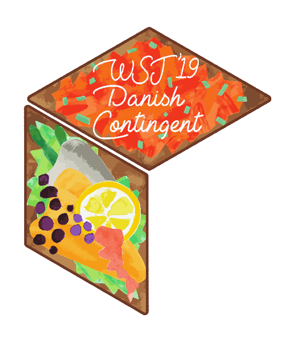
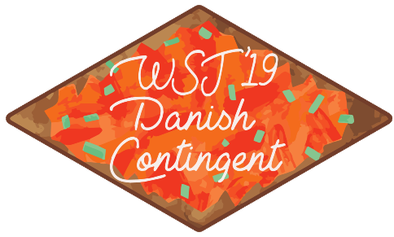
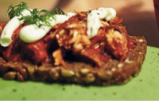
Rugbrød med makrel i tomat, toppes gerne med mayonnaise.
Dark rye bread with mackerel fish in tomato sauce, topped with mayonnaise.
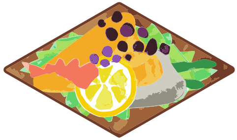
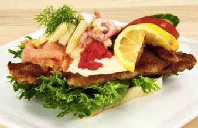
Smurt franskbrød med to stykker fisk, et stykke dampet hvid fisk i den ene halvdel og paneret rødspætte i den anden halvdel (fiskefilet). Toppes med rejer. Dekoreret med mayonnaise, rød kaviar og en citronskive.
Buttered white bread with two pieces of fish, one half is covered with steamed white fish, while the other half is covered with fried, battered plaice. Topped with shrimpæ Decorated with mayonnaise, red caviar and a slice of lemon
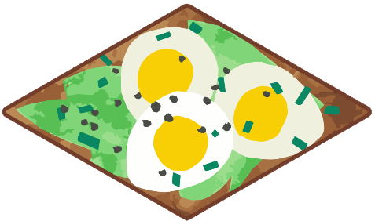
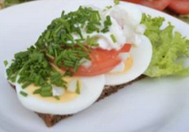
Rugbrød med ægge-skiver, mayonnaise og karse. Kan toppes med enten rejer eller tomat.
Dark rye bread with egg slices, mayonnaise and cress. Can be topped with either tomato or shrimp
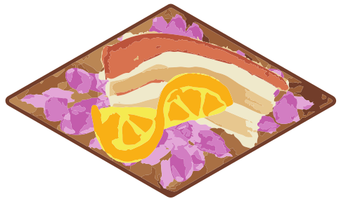
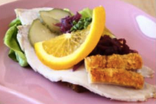
Rugbrød med flæskesteg og varm rødkål. Serveres gerne med syltede agurker, appelsin og karse.
Dark rye bread with roast pork and hot red cabbage. Can be served with pickled cucumber, orange, and garden cress on top.
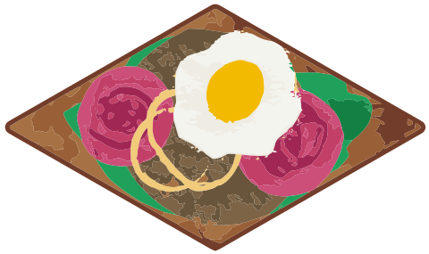
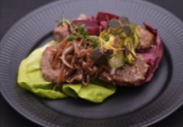
Rugbrød med hakkebøf med stegte bløde løg oven på. Ofte med enten syltede agurker eller rødbede på. Kan også laves med spejlæg på.
Dark rye bread with a hamburger steak and saucéed onions. Often served with either pickled cucumber or pickled beetroot on top.
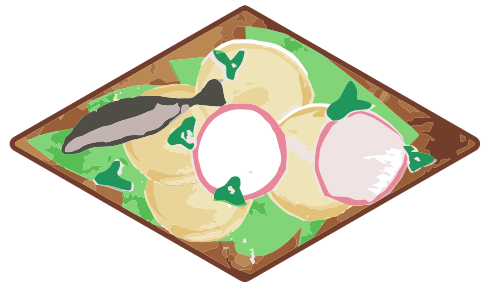
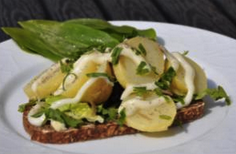
Rugbrød med kogte kartofler, mayonnaise og enten løg, purløg eller ramsløg. I Nogle variationer er løgene stegt i stedet for rå.
Dark rye bread with boiled potatoes, mayonnaise, and onions, chives or ramsons on top. Some variations have fried onions instead of raw.
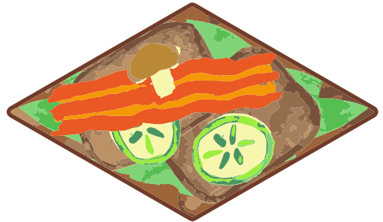
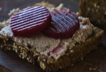
Rugbrød med leverpostej. Ses gerne med enten, agurk, rødbeder, asier eller bacon oven på. Kan også have salat under leverpostejen.
Dark rye bread with liver pâté. Served with either cucumber slices, pickled beetroot, gherkins, or bacon on top. Can be made with a lettuce leaf under the liver pâté.
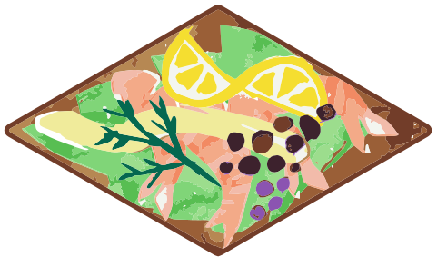
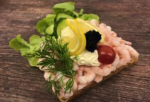
Rugbrød med pillede rejer, mayonnaise, citron og enten dild eller karse på toppen. I Nogle variationer er der tilføjet tomat.
Dark rye bread with peeled shrimp, mayonnaise, lemon and either dill or cress on top. Some variations are with tomatoes too.
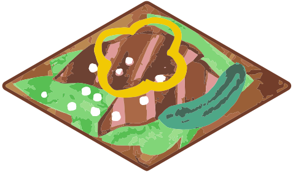
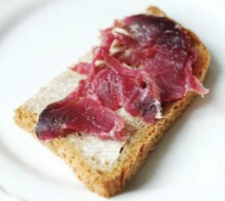
Enten rugbrød eller franskbrød med skærpekød. Skærpekød er fra færøerne, det laves ved at lade fårekød vindtørre, så det fermenteres.
Either dark rye bread or white bread with Skerpikjøt. Skerpikjøt is from the Faroe islands, the meat is made by wind drying sheep meat and let it be fermented.
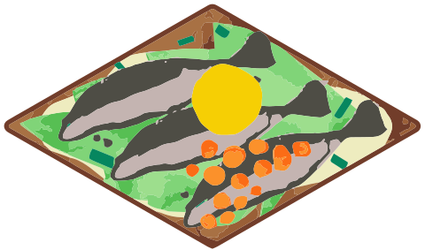
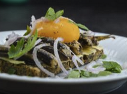
Rugbrød med røget sild, rå æggeblomme, løg eller purløg samt radiser. Bornholmsk smørrebrød navngivet efter den bornholmske by Gudhjem.
Dark rye bread with smoked herring, raw egg yolk, onion or chives, and radishes. Bornholmian smørrebrød named after the Bornholmian town Gudhjem.
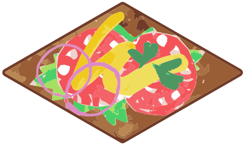
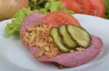
Rugbrød med spegepølse og remoulade. Kan toppes med friske og syltede agurker, ristede og rå løg og tomat.
Dark rye bread with salami and remoulade. Can be topped with fresh and pickled cucumber, fried and raw onion and tomato.
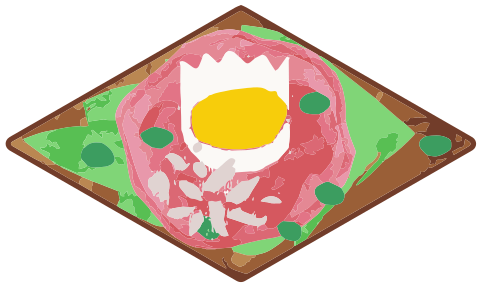
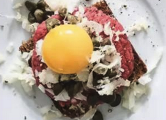
Rugbrød med råt hakket oksekød, toppet med hakkede løg, kapers, peberrod og syltede agurker, samt en æggeblomme.
Dark rye bread with raw chopped beef, topped with chopped onions, capers, horseradish and pickled cucumber, as well as an egg yolk.
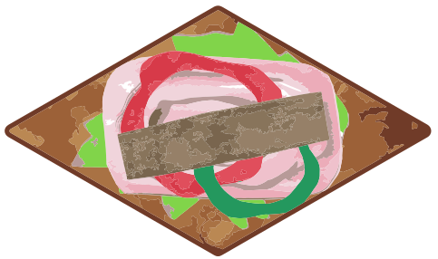
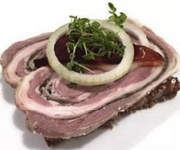
Rugbrød med rullepølse, sky og rå løgringe. Toppes eventuelt med karse.
Dark rye bread cold cuts of rolled pock neck fillet, sky (topping made from the juices from meat) and raw onion rings. Can be topped with cress.
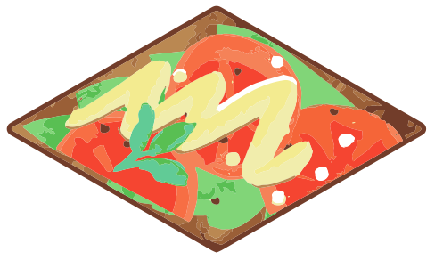
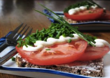
Rugbrød med tomatskiver,mayonnaise og karse.
Dark rye bread with tomato slices, mayonnaise and cress
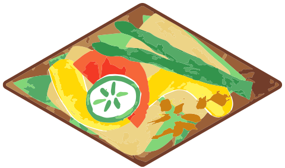
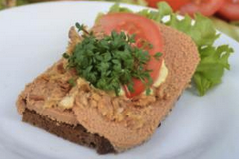
Rugbrød med torske-rogn og remoulade. Kan toppes med tomat, agurk og ristede løg.
Dark rye bread with cod roe and remoulade. Can be topped with tomato, cucumber and fried onions.
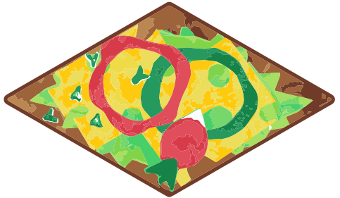
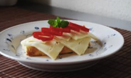
Enten rugbrød eller franskbrød med ost og skiver af peberfrugt.
Either dark rye bread or white bread with cheese and pepper slices.